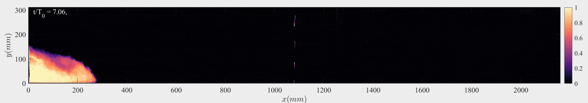
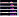
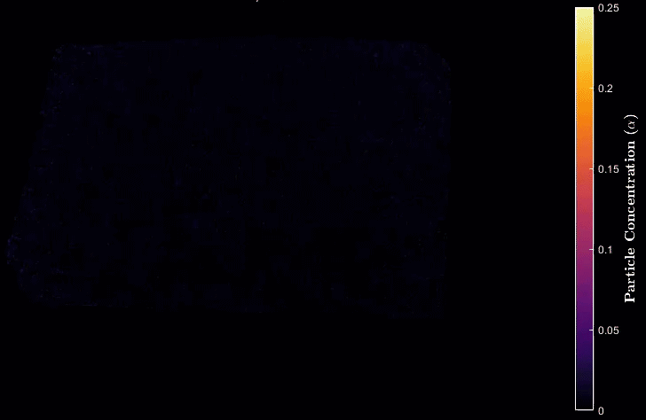
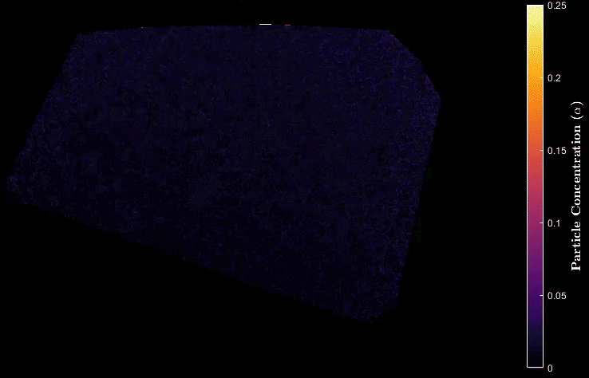
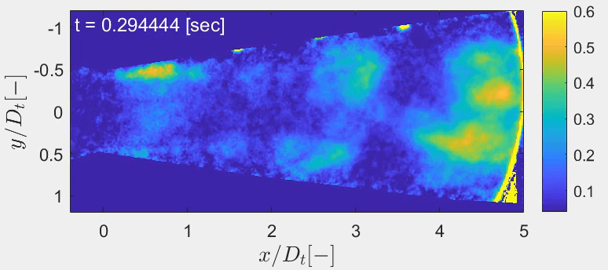
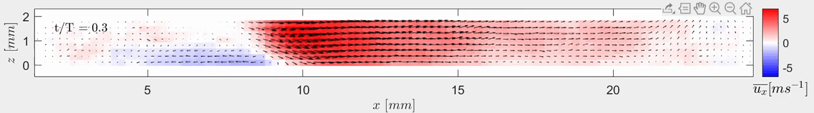
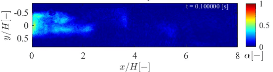

Postdoctoral Researcher | Institute of Fluid Dynamics | ETH Zürich
I am an experimental fluid dynamist by training. I am currently a Postdoctoral Researcher at the Institute of Fluid Dynamics (IFD) at ETH Zurich, in the group of Filippo Coletti. Here, my research focuses on compositional/particle-laden gravity currents and the underlying physical processes. Such flows are representative of various geophysical/environmental flows, such as oceanic overflows that drive meridional currents, powder-snow avalanches, and turbidity currents. Since these flows are buoyancy-driven, quantification of density and velocity is crucial. We achieve this not only via visible wavelengths (PIV+PLIF, light attenuation techniques) but also via X-ray radiography to see through seemingly optically opaque, dense particle suspensions. Before moving to IFD, I was a PhD researcher at TU Delft, the Netherlands, where I studied turbulent bubbly flows (natural and ventilated cavitation) and single-phase/particle-laden pipe flows in the groups of Christian Poelma and Jerry Westerweel.

The graphic shows the propagation of saline gravity currents with an identical initial reduced gravity on a varying degree of bottom slope. The density fields show faster current, enhanced mixing and entrainment of the surrounding fluid into the body of the current at steeper slopes. Full time series is here.

The graphic shows the propagation of particle-laden gravity currents (turbidity currents) with an identical initial reduced gravity on a mild (2 deg) and steep slope (20 deg), visualised by the particle concentration fields measured using 2-D X-ray densitometry system built at IFD, ETHZ.



On the other hand, an extremely thin liquid film-"re-entrant jet" sandwiched between the vapour cavity and the venturi wall was measured with tomographic PIV for the first time to elucidate its role in vapour shedding at low cavitation number, i.e. less aggressive cavitation. In the graphic, the re-entrant jet shown in blue can be seen travelling upstream, where it will pinch the cavity off.

